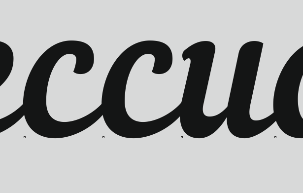
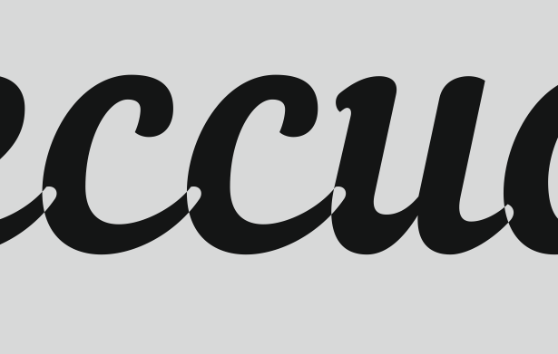

Проблема с переводом текста в кривые в версии 7
nglazov / 12.01.2015, 20:38/20:39
Форум:
Версия программы:
17.1.0.572
При переводе в кривые фигурного текста возникают следующие дефекты. Может быть кто-нибудь сталкивался?
Текст:

Кривые:

А разве в wireframe режиме до конвертации не такая же картина?
Хоть фигурный, хоть в рамке – без разницы.
Это происходит у любых шрифтов, у которых кернинговые пары настроены так, чтобы элементы букв перекрывались, создавая эффект безотрывного письма.
Что делать: перед тем, как переводить в кривые, всё разъедините до отдельной буквы. Затем выделите все символы, захватив рамкой, и переведите в кривые.
Всё будет хорошо.